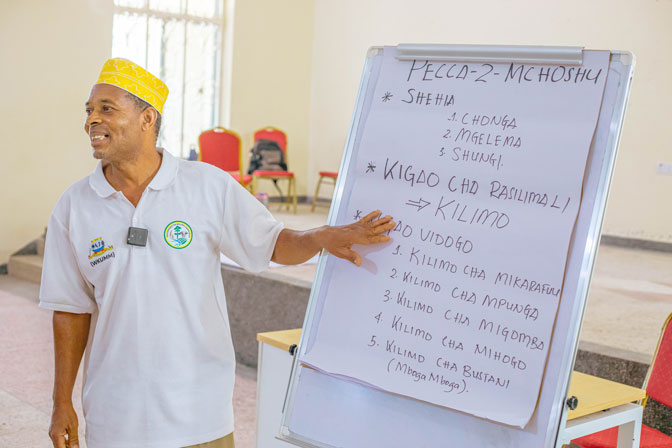

Marine Spatial Planning
Mkoani-Pemba and Mkuranga, Pwani Region, Tanzania
About MSP
This Marine Spatial Planning project develops comprehensive spatial plans for sustainable coastal and marine resource management in Mkoani (Pemba) and Mkuranga (Pwani Region), Tanzania. The initiative integrates scientific research, stakeholder engagement, and participatory planning to support evidence-based marine governance and blue economy development.
Target Audience: Marine resource managers, fisheries professionals, conservation practitioners, and policy makers seeking to improve coastal governance and sustainable use of marine resources in Tanzania and the broader Indian Ocean region.
Consultancy Core Components

📋 About the Initiative
Project overview, focus areas, spatial planning approach, and key partnerships. Learn about the initiative’s vision and implementation framework.

📅 Scope of Work
Detailed project timeline, deliverables, target completion dates, and project team responsibilities. Track progress across six major work packages.

🌿 Biodiversity Assessment
Decadal trends in marine biodiversity loss and gain, geospatial mapping of mangrove ecosystems, and ground-truthed validation data. Due: 25 January 2026

🗺️ Field Data Collection
Comprehensive multi-disciplinary data collection including physical, biological, geomorphological, and socioeconomic data across study sites. Due: 25 January 2026

💰 Ecosystem Valuation
Economic valuation of coastal and marine ecosystem goods and services in USD, including comparative risk analysis and stakeholder-validated recommendations. Due: 31 March 2026

📊 Bio-Economic Analysis
Cost-benefit analysis of proposed bioeconomic activities, green/blue finance instruments, and policy guidance for blue economy growth and ecosystem resilience. Due: 31 March 2026

💻 Digital Visualization
Interactive dashboard, web maps, and story maps illustrating marine biodiversity and ecosystem status across Tanzania with focused analysis on Mkuranga and Mkoani. Due: 15 April 2026

🤝 Stakeholder Validation
Validation meeting bringing together district authorities, fishing communities, and government representatives to review and endorse spatial planning outputs. Scheduled: 28 February 2026
Implementation Approach
- Evidence-Based: Grounded in scientific data and international best practices for marine spatial planning
- Participatory: Inclusive engagement with fishing communities, government agencies, and conservation partners
- Integrative: Combines biological, geomorphological, socioeconomic, and economic analyses
- Adaptive: Built-in mechanisms for monitoring, evaluation, and plan refinement
- Scalable: Approaches applicable to other coastal regions in Tanzania and the Indian Ocean
Financial and Technical Support
This initiative is supported by the Nairobi Convention Secretariat, which provides:
- Technical Expertise: Guidance on implementing regional marine spatial planning standards and best practices aligned with the Nairobi Convention framework for Eastern African, Indian Ocean, and Indian Seas regions
- Financial Resources: Grant funding and technical assistance to support project implementation, field activities, and capacity building
- Regional Coordination: Connection to the broader Nairobi Convention network of coastal states and regional organizations working on marine conservation and sustainable use
The project aligns with the Nairobi Convention’s objectives for protecting, managing, and developing the marine and coastal environment of the Eastern African region.
Getting Started
Learn More About the Initiative View Project Timeline & Deliverables
Project Duration: September 2025 - April 2026 | Study Sites: Mkoani-Pemba and Mkuranga-Pwani | Language: English